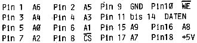

Nascom Journal |
Mai 1982 · Ausgabe 5 |
Liebe Leser,
nachdem diese Rubrik im letzten Heft etwas zu kurz gekommen ist, hier nun wieder etwas ausführlicher.
Zunächst ein Hilferuf! Wo sind Ihre Einsendungen geblieben? Erst hatte ich etwas Sorge, ob sich mit den vorhandenen Beiträgen überhaupt ein vollständiges Heft zusammenstellen ließe. So arbeitete das Team auf Hochtouren. Die abgedruckten Artikel stammen ja nun fast ausschließlich vom „harten Kern“. Da ich es nicht über’s Herz bringen konnte, einige Artikel für die nächste Ausgabe zurückzuhalten, sieht unser Vorrat nun etwas Mager aus. Also bitte: Trotz des schönen Wetters- setzen Sie sich doch mal an Ihre Maschine und schreiben Sie, was Sie sicher schon lange schreiben wollten.
Zu den Cassettensendungen ein wichtiger Hinweis (die meisten Einsender schicken ja glücklicherweise schon ihre Beiträge auf Cassette): Bitte verpacken Sie die Cassetten ordentlich (am besten in Jiffy-Umschläge). Neulich erhielt ich eine Cassette, die einschließlich Plastikhülle quer durchgeschnitten war. Einziger Kommentar der Post:„Wir bitten, das Vorkommnis zu entschuldigen.“ Deshalb auch immer Kopien bereithalten!
Michael Bach hat angeregt, die Assemblerlistings in etwas kürzerem Format abzudrucken. Vergleichen Sie nun bitte die Formate beim Lightpen und Typenrad-Terminal. Letzteres ist inklusive Maschinencode abgedruckt und beansprucht sehr viel Platz (deshalb das Querformat). Beim Lightpen tauchen zwei Formate auf: 1. voll formatiertes Listing mit abgesetzten Labels (Maschinencode abgeschnitten) und 2. einfacher Ausdruck des Sourcecodes (Labels eingerückt). Dieser ist natürlich für uns am bequemsten und zudem platzsparend. Bitte entscheiden Sie, welches Format für Sie am angenehmsten ist. (Bitte keine Klagen, wenn Sie sich nicht melden).
Immer wieder treffen Karten von Lesern ein, die sich am letzten Rundlauf beteiligen wollen. Bitte stellen Sie die Anfragen nun ein. der Rundlauf ging termingerecht heraus und wird nun wohl einige Zeit unterwegs sein (es gab diesmal eine Unmenge von Teilnehmern). Wenn die Cassetten wieder zurück sind werden wir das bekanntgeben.
Beachten Sie bitte die Antwort auf den Leserbrief von Herrn Schneider. Hier wird dargelegt, wie wir in Zukunft das Journal etwas durchlässiger für Benutzer anderer Z80 Systeme gestalten wollen. Das Lightpen-Listing ist da ein bescheidener Anfang (Bitte Meinung dazu; vor allem von Lesern mit anderen Rechnern!). Dies ist im Augenblick für uns das wichtigste Thema und bei weitem noch nicht ausgegoren.
Zur Video-Karte von D. Oberle und A. Zippel (übrigens wie der Typenradanschluß von G. Kreidl schon seit langem von vielen Lesern gewünscht!): Die Folie zum Lay-Out ist für einen Unkostenbeitrag von DM 5,– und Freiumschlag bei der Redaktion erhältlich.
Fehler im Centronics-Interface von J.C.Lotter (Heft 6-82 Seite 10):
74LS125 Pin4 an SFD
TBRE zu Datenbit 6 ist zu unterbrechen (nicht wie angegeben).
Das Toolkit scheint mit Nassys3 nicht zu funktionieren: die
automatischen Zeilennummern spielen verrückt. Wer weiß Abhilfe??
Hier die versprochenen Pin Anschlüsse der 2114
zum Programmierbaren
Charactergenerator von J.C.Lotter
(Heft 3/4-82).

Last not least – Wir haben ihn: den Gewinner des Grafik
Preisausschreibens. Michael Bach mit seinem
Doppelwurm (bzw. der
Klötzchengrafik
in Masch.Code) machte das Rennen. Trost für die anderen
Teilnehmer: es war ein harter Kampf in der Redaktion und bei den Lesern.
Und nun viel Spaß mit diesem „Hardware-Heft“
Ihr Günter Böhm
| Seite 2 von 32 |
|---|